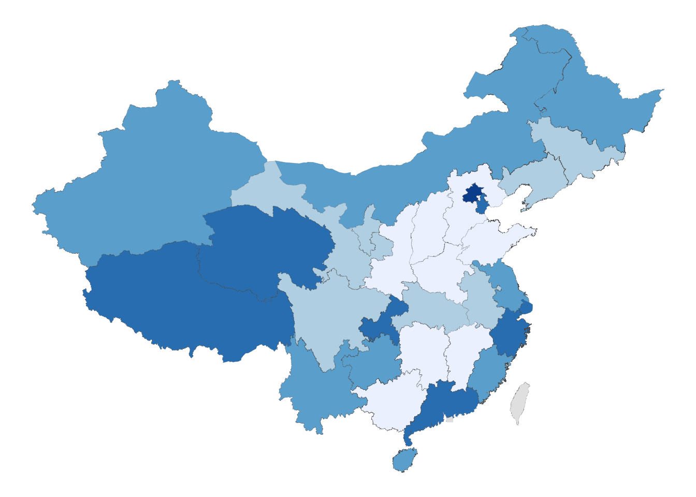
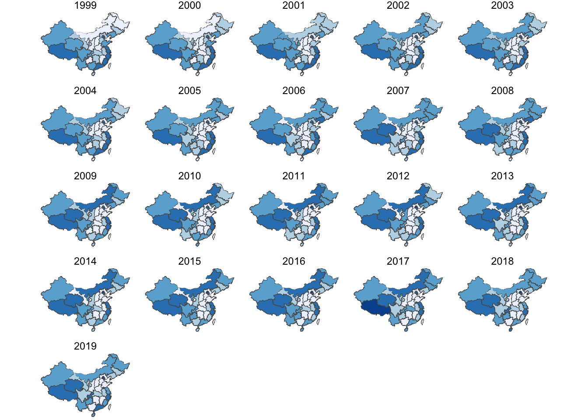
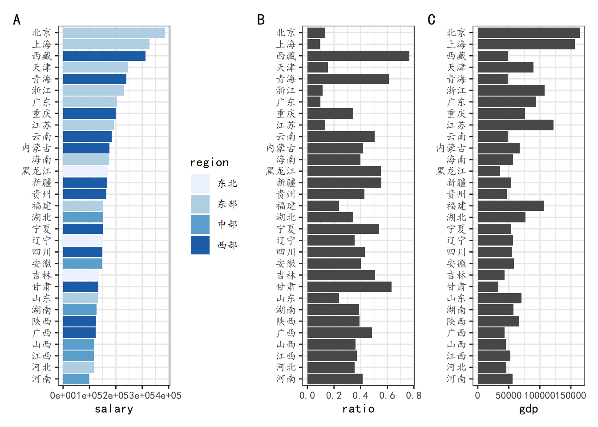
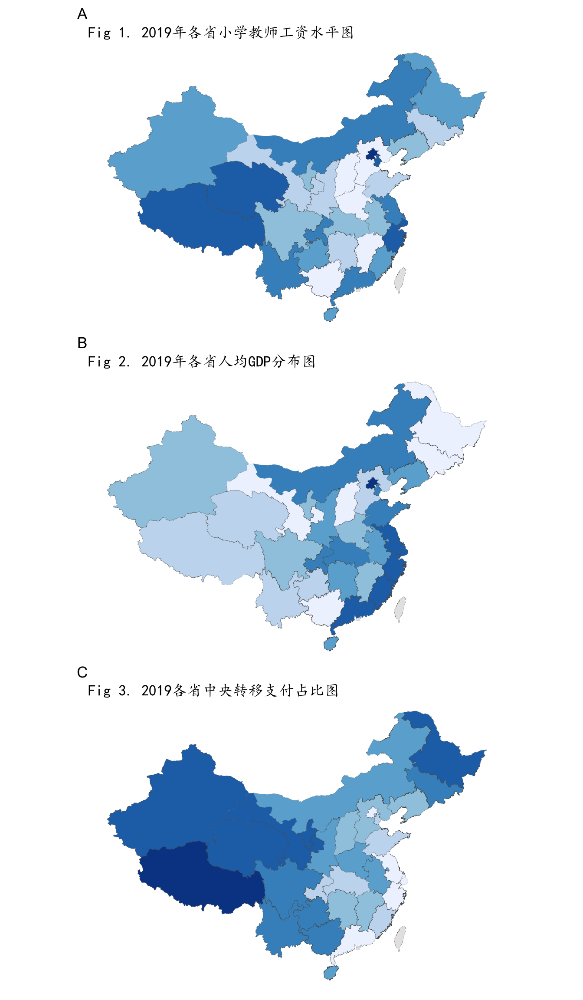

# setup
library(tidyverse)
library(rio)
library(sf)
library(sjmisc) # rec()
library(RColorBrewer)
library(here)
library(janitor)
# 各省教育财政支出数据导入与处理
## 1999-2006年数据
pexpend_06 <- import(here("files/middle_zone/expend_teacher.xlsx"), which = 1) %>%
mutate(across(c(year:outlay_self), as.numeric))
## 2007-2019年的数据
pexpend_19 <- import(here("files/middle_zone/expend_teacher.xlsx"), which = 2) %>%
mutate(across(c(year:outlay), as.numeric))
# 1999-2019年各省教师数据导入与处理
pteacher <- import(here("files/middle_zone/expend_teacher.xlsx"), which = 3) %>%
mutate(across(c(year, teacher), as.numeric))
## 数据预处理
data_0719 <- pexpend_19 %>%
select(province, year, sum_person) %>%
left_join(pteacher, by = c("province", "year")) %>%
drop_na(teacher) %>%
mutate(salary = sum_person * 1000 / teacher)
data_9906 <- pexpend_06 %>%
select(province, year, sum_person) %>%
left_join(pteacher, by = c("province", "year")) %>%
drop_na(teacher) %>%
mutate(salary = sum_person * 1000 / teacher)
## 1999－2006，2007－2019年数据合并
salary_total <- bind_rows(data_9906, data_0719)
# 地图数据导入与处理
china <- st_read(here("files/middle_zone/china_shp"),quiet = TRUE)
china$NAME <- rec(china$NAME, rec="北京市=北京;天津市=天津; else=copy")
# 合并地图与教师工资数据
sh_salary <- china %>%
right_join(salary_total,by=c("NAME"="province")) %>%
group_by(year) %>%
mutate(salary_d=findInterval(salary,quantile(salary,prob=0:4/4))) %>%
mutate(salary_dc=as.character(salary_d))中小学教师“中部凹陷”问题
各省中小学教师工资水平的比较
各省中小学教师工资的差异在哪？现有统计数据中没有直接的数据。但统计数据中有各省各学段人员经费的总支出，而人员经费支出即是用于教师工资及福利的支出，该数值除以各省各段专任教师的数量，即可以在一定程度上反映各省中小学教师的工资水平。接下来我将以各省小学的人员经费数据和小学教师数量为例。
2019年各省小学教师工资水平分布情况
下图@fig-plot1呈现的是2019年各省小学教师工资水平的空间分布情况，如图所示，可以发现一个重要事实：小学教师工资水平较低的省份主要是中部省份，而经济发展水平较低的省，比如西藏、青海，小学教师工资水平也中部河南江西要高。
ggplot() +
geom_sf(data = china, size = 0.02) +
geom_sf(
data = filter(sh_salary, year == 2019),
aes(fill = salary_dc),
size = 0.02, show.legend = F
) +
scale_fill_brewer() +
theme_void()
历年各省小学教师工资水平分布情况
上图只能反映2019年的状况，那么从历史角度来看是怎样的呢？下图 @fig-plot2 是1999至2019年各省小学教师工资水平的分布图，可以发现2019年各省小学教师工资水平的分布并不是一个截面的状态，而是一个长期现象。
ggplot() +
geom_sf(data = china,size=0.02)+
geom_sf(data=sh_salary,aes(fill=salary_dc),
size=0.02,show.legend = F)+
scale_fill_brewer()+
theme_void() +
facet_wrap(~year,ncol = 5)
中部凹陷为什么存在
首先想到的可能与各省的经济水平有关，下面来看一下各省人均GDP的分布。省级财政经费还有中央转移支付，我们也将看看中央转移支付占比与人均转移支付的问题。首先导入数据，数据主要是各省的GDP数据和财政收入与中央政府转移支付的数据。
#导入数据
##2011-2020年各省gdp数量
higher <- import(here("files/middle_zone/higheredu_gdp.xlsx"))
gdp <- higher %>%
select(province, starts_with("gdp")) %>%
drop_na(province) %>%
rename(name=province) %>%
pivot_longer(starts_with("gdp"),names_to="year", values_to = "gdp") %>%
mutate(year=parse_number(year))
##转移支付数据
transfer <- import(here("files/middle_zone/province_transfer.xlsx")) %>%
clean_names() %>%
mutate(total=str_detect(item,"Transfer")) %>%
pivot_longer(starts_with("x"),names_to = "year",values_to="revenue") %>%
mutate(total=as.factor(total)) %>%
select(province, year, total, revenue) %>%
pivot_wider(names_from = total, values_from = revenue) %>%
mutate(year=parse_number(year)) %>%
rename(total=`FALSE`,transfer=`TRUE`)
##1999-2019年各省财政收入、转移支付收入
transfer5 <- transfer %>%
filter(year>1998 & year<2020) %>%
mutate(ratio=transfer/total)
#各省人口数据(1949－2019)
popluation <- import(here("files/middle_zone/population.xlsx")) %>%
clean_names() %>%
mutate(type=str_detect(population,"城镇|乡村")) %>% # 选择各省总人口数据
filter(type==FALSE) %>%
mutate(name=str_sub(population,5)) %>% # 中文省名
pivot_longer(starts_with("x"),
names_to = "year",values_to="pop") %>%
mutate(year=parse_number(year)) %>%
select(name, province, year, pop)
##1999-2020各省人口数据
pop <- popluation %>%
filter(year>1998 & year<2020)
##合并人口与转移支付数据
trans_pop <- pop %>%
left_join(transfer5, by=c("province","year")) %>%
mutate(transfer_per=transfer/pop)
#区域指示数据
region <- import(here("files/middle_zone/china_zone.xlsx")) %>%
select(name,region)
#多个数据合并
data_triple <- salary_total %>%
rename(name=province) %>%
left_join(trans_pop,by=c("name","year")) %>%
left_join(gdp,by=c("name", "year")) %>%
left_join(region,by="name")查看教师工资水平、人均GDP、转移支付占比之间的关系
下图A展示的是2019年各省小学教师工资水平的排序图，小学教师工资水平较低的省份依次是河南、河北、江西、山西、广西、陕西。水平较高的省份主要是北京、上海、西藏、天津、青海。图B和C，可以看出各省GDP与中央政府财政转移支付之间的互补关系。
theme_set(theme_bw(base_family = "KaiTi"))
plot_trans <- data_triple %>%
filter(year == 2019) %>%
ggplot() +
geom_col(aes(y = fct_reorder(name, salary), x = ratio))+
labs(y=NULL)
plot_gdp <- data_triple %>%
filter(year == 2019) %>%
ggplot() +
geom_col(aes(y = fct_reorder(name, salary), x = gdp))+
labs(y=NULL)
plot_salary <- data_triple %>%
filter(year == 2019) %>%
ggplot() +
geom_col(aes(y = fct_reorder(name, salary), fill = region, x = salary))+
scale_fill_brewer()+
labs(y=NULL)
# comparion
library(patchwork)
plot_salary+plot_trans + plot_gdp+plot_annotation(tag_levels = 'A')
2019年各省教师工资水平、人均GDP、转移支付占比的空间分布图
我们以2019年各省小学教师工资水平为例，通过下图可以发现：小学教师工资水平高的省份要么是本省人均GDP较高，要么是中央转移支付占比比较高。小学教师工资水平低的省份主要分布在中部地区，原因在于本省人均GDP不高，且中央转移支付的占比也不高。
data2019 <- data_triple %>%
filter(year==2019)
sh_total <- china %>%
right_join(data2019,by=c("NAME"="name")) %>%
mutate(salary_d=findInterval(salary,quantile(salary,prob=0:6/6)),
ratio_d=findInterval(ratio,quantile(ratio,prob=0:6/6)),
gdp_d=findInterval(gdp,quantile(gdp,prob=0:6/6)),
) %>%
mutate(salary_dc=as.character(salary_d),
ratio_dc=as.character(ratio_d),
gdp_dc=as.character(gdp_d))
plot1 <- ggplot() +
geom_sf(data = china,size=0.02)+
geom_sf(data=sh_total,aes(fill=salary_dc),size=0.02,show.legend = F)+
scale_fill_brewer()+
theme_void()+
labs(title = "Fig 1. 2019年各省小学教师工资水平图")
plot2 <- ggplot() +
geom_sf(data = china,size=0.02)+
geom_sf(data=sh_total,aes(fill=gdp_dc),size=0.02,show.legend = F)+
scale_fill_brewer()+
theme_void()+
labs(title = "Fig 2. 2019年各省人均GDP分布图")
plot3 <- ggplot() +
geom_sf(data = china,size=0.02)+
geom_sf(data=sh_total,aes(fill=ratio_dc),size=0.02,show.legend = F)+
scale_fill_brewer()+
theme_void()+
labs(title = "Fig 3. 2019各省中央转移支付占比图")
(plot1/plot2/plot3)+plot_annotation(tag_levels = 'A')&
theme(plot.title = element_text(family = "KaiTi"))